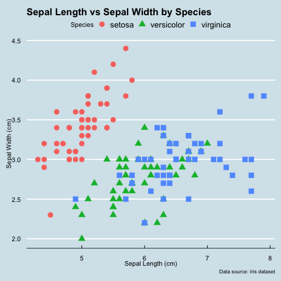

import seaborn as sns
import matplotlib.pyplot as plt
iris = sns.load_dataset('iris')
sns.scatterplot(data=iris, x='sepal_length', y='sepal_width', hue='species')
plt.title('Sepal Length vs. Sepal Width by Species')
plt.show()Learning R
Where I Try New Things
Data Analysis
Plots
R
I always heard that once you grasp one programming language, it is quick to learn to another. The first one is the hardest. I’ve tried learning a bit of Java, but to no avail. During the early years of the iPhone, I had dreams of building an app, only to never get started with Swift. To be fair, I did not put in as much effort in those endeavors as I should have. Mostly, it is down to not having a workable project/goal in mind. That was different when I was learning Python, with the simple programs I have been able to make and post freely on GitHub. Now as I’ve become comfortable with Python, I have begun exploring other languages to see if they can fit into my workflow. That adage is true - learning a new language is easier once you already know another.
I have known about R for a while. It has always come across as a magical skill. I’ve come across R as figures in many papers. Take this article, where machine learning models and plots were coded using R. Neat stuff! I find many figures produced in R visually pop with easily digestible information. It is true that many figures in R can be produced in Python. That is why I put in a lot of effort in finding or making equivalent(ish) in Python (see Py50). But in the end, they are never exactly right. There are some things that are limiting in Python. Lucky for me, there is a package that makes it easy to combine R plotting with Python.
Plotting in Python
For a comparison, here is a plot in Python. Here I used the popular seaborn pacakge and used the iris dataset. This scatterplot looks pretty good.
Making R Plots in Python
During my searches, I came across this package, rpy2, which is an interface to run R scripts in Python. It is easy to install:
pip install rpy2Then, for users in Jupyter Notebook, the rpy2 can be run at the top of with all the imports using:
%load_ext rpy2.ipythonTo get R scripts working in Jupyter Notebook, the “IRkernel” will need to be installed first. This is done by manually downloading R (here) and then in the terminal or an IDE, install it as:
install.packages("IRkernel")After that, Jupyter Notebooks should be ready to go. The main thing is making sure that the R extension is used. I imagine using this at the top of the notebook, like when you import Python modules.
# load the R extension
%load_ext rpy2.ipythonFor the subsequent cell with R script, users would type ‘%%R’ at the top of the cell. Everything else should be the same. here is a code that was copied from the r-graph gallery.
There are some similarities with python, in that you need to import libraries. What most sticks out to me is <- used instead of = when declaring variables. Otherwise, it is about learning the individual functions, in this case ggplot2 and ggthemes, and layering them in. Running the tutorial script gives you a nice looking scatterplot.
%%R
library(ggplot2)
library(ggthemes)
p <- ggplot(iris, aes(x = Sepal.Length, y = Sepal.Width, color = Species, shape = Species)) +
geom_point(size = 4) +
labs(
title = "Sepal Length vs Sepal Width by Species",
x = "Sepal Length (cm)",
y = "Sepal Width (cm)",
caption = "Data source: Iris dataset"
)
pThe figure looks good! It takes a little while to think about, but I think the “layering” of the plot makes more intuitive sense to me in R than in Python. However, that simple plot can also be made in python. I think the default figure looks better than the one produced in Seaborn. Of course, everything could be “touched up”. I have a preference for no grids, and different color palettes. But that doesn’t take away from how good teh plots look with default settings.
Special Themes
But what makes R special, in my eyes, are the special themes available. One of the gold standard figures for any plot enthusiast are the ones produced by the Economist. Lucky for R coders, ggplot2 has a nice theme that can easily replicate the Economist style plots. it is as simple as layering in theme_economist() on the plot. Oh, and importing the ggthemes package.
%%R
library(ggplot2)
library(ggthemes)
p <- ggplot(iris, aes(x = Sepal.Length, y = Sepal.Width, color = Species, shape = Species)) +
geom_point(size = 4) +
labs(
title = "Sepal Length vs Sepal Width by Species",
x = "Sepal Length (cm)",
y = "Sepal Width (cm)",
caption = "Data source: Iris dataset"
)
p + theme_economist()
Conclusion
For my workflow, Python reigns supreme. However, knowing a little R gives me more options for visualizing my data. As I play around with R, I find that I prefer the R method of “layering” in different elements on top of one another. It makes it organized and it seems to follow the way my brain things better. I always found Python to be a hodgepodge of variables slammed together.
This opens up a whole new world of themes and different visualization methods. I”m excited to see what I can do with the min the future!